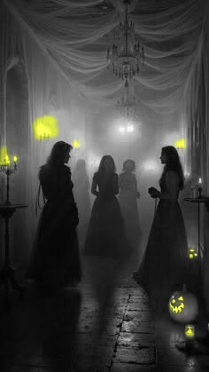

01
Udforsk de mørke rum
Gå på opdagelse i husets gange og rum, hvor ikke alt er, som det ser ud.
MystikHalloween 2026 / København
Velkommen til HorrorHouse – en halloweenfest i et hjemsøgt hus, hvor musikken, mørket og overraskelserne følger dig hele natten.
01 / Oplevelsen
Når du træder ind i HorrorHouse, træder du ind i en anden verden. Gå gennem dunkle rum, mærk stemningen og bliv en del af en halloweenfest med mørk elegance og plads til både dans, grin og gåsehud.
02 / Det venter dig
Gå på opdagelse i husets gange og rum, hvor ikke alt er, som det ser ud.
Mystik
Lad musikken tage over. Dansegulvet er åbent, og natten er din.
Musik
Find vej til baren, og lad dig overraske af aftenens mørke stemning.
Stemning03 / Aftenens forløb
Sådan kan aftenen opleves – nærmere detaljer om aktiviteter kommer senere.
Træd ind i HorrorHouse.
Mørke rum og uventede oplevelser.
Feststemning og bar.
Tak for en uforglemmelig aften.
Praktisk: Husk billet og ID. Dresscode er gothic.
31. oktober • København • Billetter fra 129 kr.